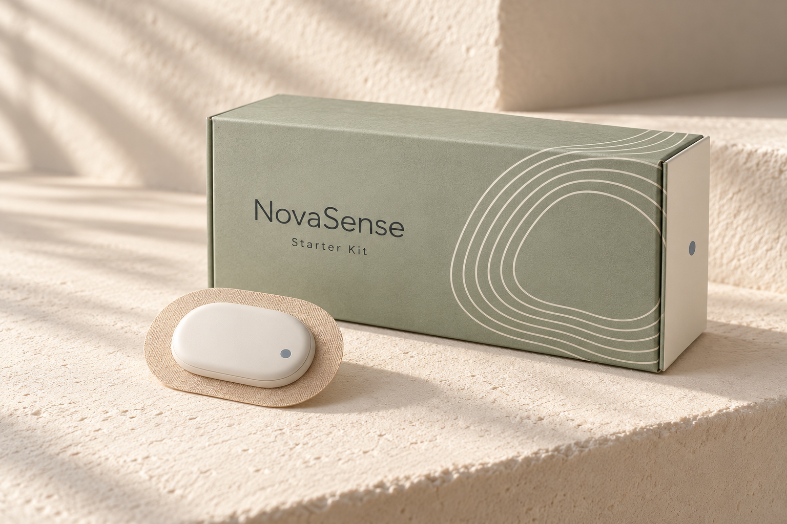

WITH A HUMAN SIDE.
Your body has
a rhythm.
A little more understanding.
A little closer to yourself.
Meet a new perspective on your cycle.
NovaSense

01 / THE NOVASENSE STARTER KITA little patch.
A bigger
picture.
Get to know the patterns
that make you, you.
You’re more than
a point on a chart.
Let’s see the whole you.
Your cycle doesn’t happen in isolation. There are busy days, quiet mornings, and everything in between.
NovaSense brings observations and your own check-ins into one personal picture. A space to notice. To understand. To feel a little more connected.
Less decoding.
More noticing.
A daily journal that makes space for the data and the person behind it.
Explore three sample entries.
Finding your
own steady.
A moment to notice what feels familiar. Your check-in adds the part only you can tell.
“A slower morning. Feeling like myself.”
Energy: steadyA small addition.
A more personal
perspective.
01Meet your patch＋
Start with a discreet wearable and a guide to getting settled. Explore the design, the kit, and what everyday use could look like.
02Make room to notice＋
Bring observations together with short check-ins. How you feel belongs beside the patterns you see.
03Get to know your patterns＋
Return to your journal over time. Read a simple summary, explore the detail, or ask for support when you want it.
A clearer sense
of yourself.
Start with the small things.
See what’s inside the NovaSense kit.
Good
questions.
What is NovaSense?
NovaSense is a fictional cycle-awareness product concept: a discreet patch, a companion experience, and personal check-ins designed to bring your patterns into perspective. This website is an interactive design preview.
Who is it designed for?
People who want to understand their menstrual cycle and personal patterns. The core story is everyday awareness and reflection.
What would come in the kit?
The proposed starter kit includes a patch, its protective tray, and an introductory guide. Explore the product page for the current concept.
Are the journal readings real?
No. All journal entries and patterns in this preview are illustrative. They demonstrate the experience rather than measurements from a working sensor.